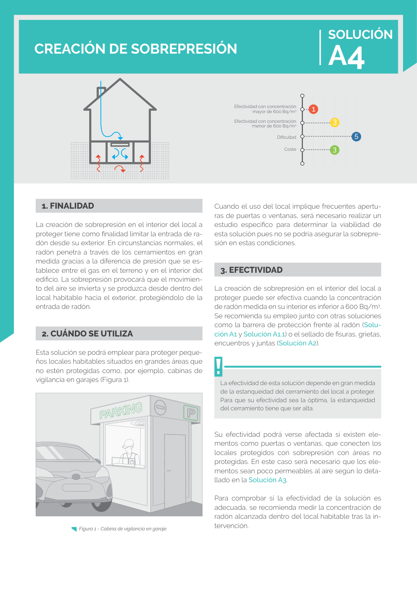

Solucion A4 Creacion de sobrepresion · edición sin-fecha · capa guia
Documento GUIA-PDF-d5b864948f3d · SHA-256 del PDF 9e206ac94c0e9df74389d8a0af98b9bbc545aab916a80e01cf036694d8733000
Página física 1 de 3.
Copia fiel del PDF fuente · Fuente oficial
Ficha de la disposición en la fuente oficial
Créditos y autoría en el PDF fuente. Reproducción con cita de fuente y autores.
Permiso literal: Se permite la reproducción total o parcial del contenido de este do Edición actual: septiembre 2020 cumento siempre y cuando se cite la fuente original y a sus autores.
Solución A4 • Creación de sobrepresión A4 33
Este documento ha sido elaborado por el Instituto de ciencias
de la construcción Eduardo Torroja (IETcc) bajo la supervisión
de la Dirección General de Agenda Urbana y Arquitectura del
Ministerio de Transportes, Movilidad y Agenda Urbana (MITMA).
SECRETARÍA GENERAL DE
AGENDA URBANA Y VIVIENDA MINISTERIO GOBIERNO El IETcc, perteneciente al Consejo Superior de Investigaciones DE TRANSPORTES, MOVILIDAD
DE ESPAÑA Y AGENDA URBANA DIRECCIÓN GENERAL DE
AGENDA URBANA Y ARQUITECTURA Científicas (CSIC), es el centro de investigación en edificación
de referencia en España. La Unidad de Calidad en la Construc
ción del IETcc asesora al MITMA en la elaboración del Código
MINISTERIO GOBIERNO DE CIENCIA Técnico de la Edificación que, desde el año 2019, cuenta con la DE ESPAÑA E INNOVACIÓN
sección HS6 Protección frente a la exposición al radón.
Dirección y Coordinación:
Ministerio de Transportes, Movilidad y Agenda Urbana
Esta ficha forma parte de una serie de documentos englobados Isabel Marcos Anasagasti
en una misma publicación, cuyo objetivo es constituir una he Raquel Lara Campos
rramienta de ayuda para el diseño de soluciones de protección Eduardo González de Prado
frente al radón: Instituto de ciencias de la construcción Eduardo Torroja CSIC
Pilar Linares Alemparte
■ Guía de rehabilitación frente al radón
Fichas de soluciones: Autoras:
Sonia García Ortega
A: De aislamiento del edificio Pilar Linares Alemparte
■ Solución A1. Barrera frente al radón
■ Solución A1-1. Barrera frente al radón. Encuentros Colaboradoras:
■ Solución A2. Sellado de fisuras, grietas, encuentros y juntas Virginia Sánchez Ramos
■ Solución A3. Puertas estancas Karina Angélica García Pardo
■ Solución A4. Creación de sobrepresión
Edita:
B: De reducción del radón antes de que penetre en los locales Centro de Publicaciones Secretaría General Técnica
a proteger Ministerio de Transportes, Movilidad y Agenda Urbana©
■ Solución B1. Ventilación del espacio de contención: cá Entidad colaboradora:
mara de aire Consejo Superior de Investigaciones Científicas · CSIC
■ Solución B2. Ventilación del espacio de contención: loca Ministerio de Ciencia e Innovación
les no habitables
■ Solución B3. Despresurización del terreno Catálogo de publicaciones de la Administración General
del Estado: publicacionesoficiales.boe.es
C: De reducción del radón tras penetrar en los locales a proteger
■ Solución C1. Ventilación de los locales habitables Centro virtual de publicaciones del Ministerio de Transpor
tes, Movilidad y Agenda Urbana: www.mitma.gob.es
Fichas de ejemplos:
Página web del Código Técnico de la Edificación:
■ Ejemplo A1+B3. Barrera frente al radón + despresurización www.codigotecnico.org
con red de tubos
■ Ejemplo A2+B1. Sellado + ventilación de la cámara sanitaria Maquetación y diseño gráfico:
■ Ejemplo A2+B3. Sellado + despresurización con red de tubos Lapizmente. Estrategia • Diseño Gráfico
■ Ejemplo A2+C1. Sellado + ventilación mecánica de los loca- Los contenidos o ideas recogidas en este documento pertenecen a
les habitables sus autores. Este documento está basado en el conocimiento dispo
nible en el momento de su publicación. No se aceptará por las institu
Publicación completa: ciones ni los autores implicados responsabilidad de ningún tipo por el
ISBN: 978-84-498-1045-9 uso de estas recomendaciones. Las figuras tienen carácter ilustrativo
NIPO: 796-20-136-5 y no deben interpretarse como detalles constructivos.
1ª edición: septiembre 2020 Se permite la reproducción total o parcial del contenido de este do
Edición actual: septiembre 2020 cumento siempre y cuando se cite la fuente original y a sus autores.Formato: Texto de la página (Markdown)
Efectividad con concentración mayor de 600 Bq/m3 Efectividad con concentración menor de 600 Bq/m3 Dificultad Coste 1 3 5 3 CREACIÓN DE SOBREPRESIÓN SOLUCIÓN A4 Cuando el uso del local implique frecuentes apertu ras de puertas o ventanas, será necesario realizar un estudio específico para determinar la viabilidad de esta solución pues no se podría asegurar la sobrepre sión en estas condiciones. 3. EFECTIVIDAD La creación de sobrepresión en el interior del local a proteger puede ser efectiva cuando la concentración de radón medida en su interior es inferior a 600 Bq/m3. Se recomienda su empleo junto con otras soluciones como la barrera de protección frente al radón (Solu ción A1 y Solución A1.1) o el sellado de fisuras, grietas, encuentros y juntas (Solución A2). La efectividad de esta solución depende en gran medida de la estanqueidad del cerramiento del local a proteger. Para que su efectividad sea la óptima, la estanqueidad del cerramiento tiene que ser alta. Su efectividad podrá verse afectada si existen ele mentos como puertas o ventanas, que conecten los locales protegidos con sobrepresión con áreas no protegidas. En este caso será necesario que los ele mentos sean poco permeables al aire según lo deta llado en la Solución A3. Para comprobar si la efectividad de la solución es adecuada, se recomienda medir la concentración de radón alcanzada dentro del local habitable tras la in tervención. 1. FINALIDAD La creación de sobrepresión en el interior del local a proteger tiene como finalidad limitar la entrada de ra dón desde su exterior. En circunstancias normales, el radón penetra a través de los cerramientos en gran medida gracias a la diferencia de presión que se es tablece entre el gas en el terreno y en el interior del edificio. La sobrepresión provocará que el movimien to del aire se invierta y se produzca desde dentro del local habitable hacia el exterior, protegiéndolo de la entrada de radón. 2. CUÁNDO SE UTILIZA Esta solución se podrá emplear para proteger peque ños locales habitables situados en grandes áreas que no estén protegidas como, por ejemplo, cabinas de vigilancia en garajes (Figura 1). Figura 1 - Cabina de vigilancia en garaje

Datos candidatos: compruebe celdas y notas en el PDF.